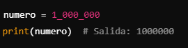

7 Curiosidades de Python que no conocías
Python es uno de los lenguajes de programación más populares y versátiles del mundo. Pero, ¿sabías que tiene varios detalles ocultos e interesantes que lo hacen aún más especial? Aquí te compartimos 7 curiosidades que quizá no conocías:
1. Su nombre no viene de la serpiente
El creador de Python, Guido van Rossum, eligió el nombre inspirado en el grupo cómico británico *Monty Python*. No tiene relación con la serpiente, aunque el logo ha reforzado esta conexión.
2. Python incluye huevos de Pascua (Easter Eggs)
Los desarrolladores de Python tienen sentido del humor. Prueba este comando en la consola interactiva de Python:
import thisVerás un poema llamado El Zen de Python, que resume la filosofía del lenguaje.
3. Es más viejo de lo que parece
Aunque Python ganó popularidad en la última década, su primera versión fue lanzada en 1991. ¡Tiene más de 30 años!
4. ¿Sabías que puedes usar emojis en Python?
Python soporta caracteres Unicode, lo que significa que puedes agregar emojis directamente en tus proyectos:
print("Python es divertido 😊")¡Perfecto para agregar un toque de personalidad a tus programas!
5. Python está escrito en C
El intérprete de Python, llamado CPython, está escrito en el lenguaje de programación C. Esto asegura su eficiencia y portabilidad en diferentes sistemas operativos.
6. Python es usado en películas de animación
Estudios como Pixar y Disney utilizan Python en su software de renderizado para crear películas animadas. Su capacidad de manejar grandes cantidades de datos lo hace ideal para este tipo de tareas.
7. Hay un "anti-zen" en Python
Si bien el Zen de Python es ampliamente conocido, prueba esto en la consola para algo diferente:
from __future__ import bracesTe encontrarás con un mensaje curioso: Not a chance, recordándonos que Python nunca adoptará llaves como delimitadores.
Extra
Puedes escribir números en formato legible con _
Para números grandes, puedes usar guiones bajos _ como separadores (desde Python 3.6):
¿Cuál de estas curiosidades te sorprendió más? ¡Déjalo en los comentarios!
Más curiosidades/tips en nuestro Blog